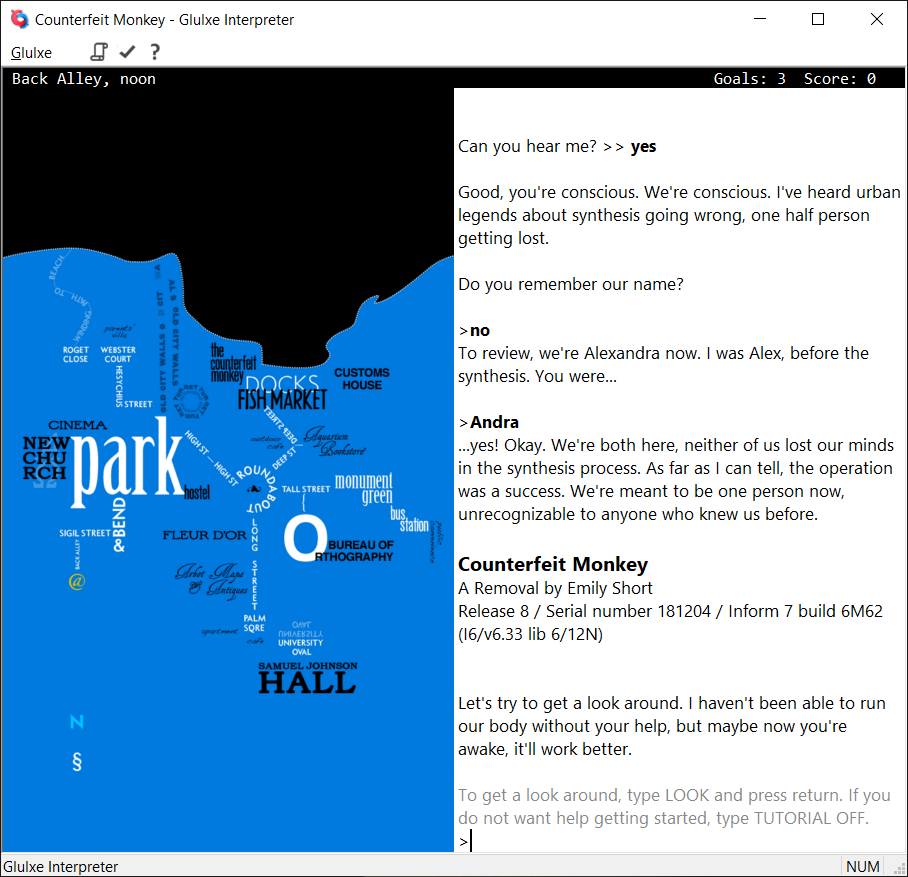
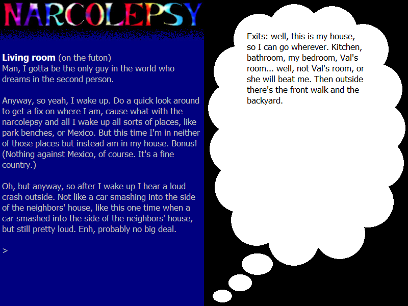

The current version is available from Windows Glulxe's GitHub release page. For ratings and descriptions of games you can play, search for Glulx games at IFDB.
Here are two screenshots of the interpreter in action: first Emily Short's Counterfeit Monkey, and then Adam Cadre's Narcolepsy.


Also available is a Windows port of a faster Glulx interpreter, called Git. This uses the same Windows I/O layer as Windows Glulxe, so it looks the same, but it plays games up to five times faster. The current version is available from Windows Git's GitHub release page.
If you're of a programming inclination, you may also be interested in the I/O layer of Windows Glulxe, called Windows Glk. This is an implementation of Andrew's Glk specification, which is an attempt to define a library interface that can be used for any text adventure style program. Windows Glk is available from its GitHub page.